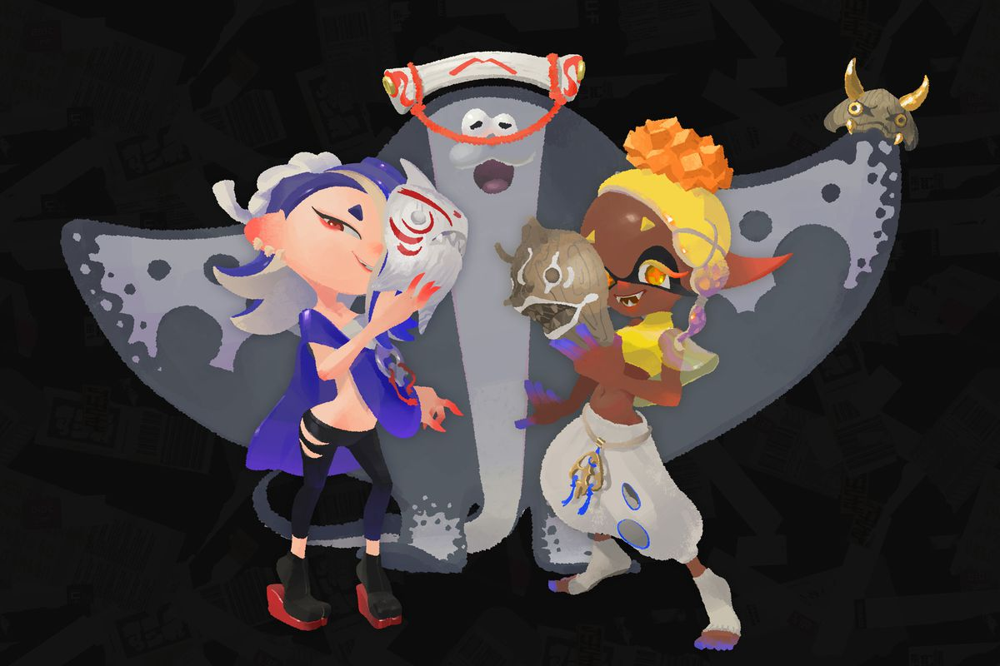

Deep Cut - An Introduction
Deep Cut is a fictional band from the video game Splatoon 3. They consist of Shiver (left) Frye (right) and Big Man (middle). In the game, they are newscasters as well as a performing group. In special events called "Splatfests", they sing the main theme songs. In addition to this, each one of them represent one of three Splatfest teams whenever there is a Splatfest. For example, in the Splatfest "rock vs. paper vs. scissors," Shiver represents rock, Frye represents paper, and Big Man represents scissors. Shiver and Frye are an anthropomorphic octopus and squid respectively (similar to the playable characters in the game), while Big Man is a manta ray.

Their Relevance In The Story Mode
While they are performers and newscasters, they also play a role in the game's story mode. When they are first introduced, they are each wearing masks before introducing themselves. These masks represent something important to each of them, specifically Shiver and Frye; Frye's mask is an eel because she's an eel tamer and Shiver's mask represents a shark since she is a shark tamer (their names also mean a group of eels and a group of sharks respectively). When you meet them in the game, they claim to be bandits looking for treasure. Because of this, in the story mode, each of them has their own individual boss fight that you must do. They eventually come back as a group one last time to you and your team, saying that they want the treasure for the benefit of the poor in Splatsville. Agents 1 and 2 tell them that they can have it, and Deep Cut become your allies for the rest of the game!